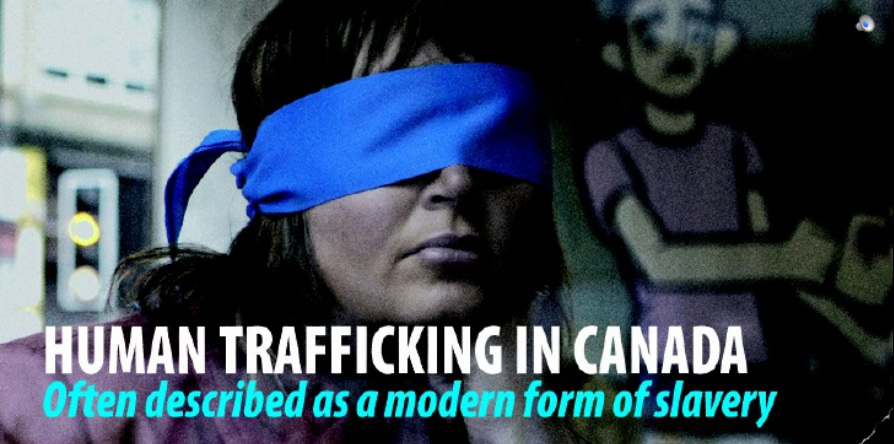
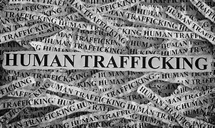

Human Trafficking
Human trafficking is one of the fastest growing crimes in Canada. One of the contributing reasons for that is
that it can happen to anyone regardless of their age or gender, studies do show that it does happen to people in their early teens to people
aging 24 compared to people of other ages. Another factor that should be taken into account is that Human trafficking can occur
anywhere regardless of the place but it does happen in more classic areas like a dark alleyway or at night.


The reason that human
trafficking occurs in these areas more commonly is highly logical. There is limited vision for any outsiders looking in and usually this place connects
to other routes so that the trafficker can move the victim efficiently through the city and into a car or other vehicle. Human
trafficking infringes on a person's right to freedom (section 2 of the charter of rights). The person is taken away against
their will and is forced to work in inhumane conditions and can virtually do nothing about it. A person may start trafficking
for a number of reasons but some of the most common ones are: revenge, money, sexual favors.